tags: firewall host-security network-security
Firewalls
links: SPA TOC - Host & Network Security - Index
Security Classification
- Technical security System security host & network security
A better information system security can be achieved with:
- host-based security mechanisms (system in a network)
- network-based security mechanisms (subnets, network zones)
Host-based Security Mechanisms
- operating system: updates, patches
- host hardening
- host or personal firewall: securing incoming and outgoing network access
- host intrusion detection an prevention/protection systems: HIDS/HIPS
- recent virus and content scanner
- endpoint security/endpoint protection
- secure applications: designed and programmed to minimize security risk
- centralized Security Information and Event Management (SIEM): send audit, system and other logs to aSIEM
Network-based Security Mechanisms
- network firewalls: protection of networks (subnets, segments, zones) against external attackers
- access control through active network devices: protection of networks against internal attackers
- network intrusion detection and prevention systems (NIDS/NIPS)
- port based authentication, network access control (NAC)
- use of centralized SIEM: also send firewall logs, access logs, IDS, flow data, …
Host or Personal Firewalls
- monitors incoming and outgoing connections
- prevents host from port scans
- limitations:
- consumes resources, can be target of an attack
- if host is compromised, the firewall is also affected
Network Firewalls
- connects two or more network segments
- capability to control, log and deny packets (filter) and modify packets (mangle)
- limitations
- cannot protect against internal attackers
- malware which came in through allowed applications
- secured or tunneling connections running through the firewall (IPsec, SSH, TLS)
Network layer firewall
- act on the network layer
- also named packet filters (drop unwanted packages)
- checking of the Header entries
- traversed interfaces and direction:
eth0 inbound - L2 MAC Header:
- source/destination address:
00:D0:20:34:4F:55 - ethertype:
0x800, 0x806, ... - tag protocol identifier:
0x8100followed by priority code point & VLAN ID
- source/destination address:
- L3 IP Header/ICMP:
- source/destination address:
192.168.1.10, 2001:620:500::1 - protocol/ next header:
1, 6, 17 - ICMP message types & code:
0, 3/0, 8, 11/1, ...
- source/destination address:
- L4 TCP/UDP:
- source/destination port:
22, 20, ... - TCP control bits:
SYN, ACK, FIN, ...
- source/destination port:
- traversed interfaces and direction:
- packet fragmentation/reassembling
- fragments of IP-packets must be reassembled before a reason check of the layer 4 headers can be done
- reassembling uses additional resources which is a target for DoS attacks
Stateless Packet Filter
- not recording state information of connections and only filter according to predefined filter rules
- less secure but more efficient than stateful packet filters
- disadvantages: outdated, difficult configuration, packets cannot be modified
Example for SSH Filter Rules
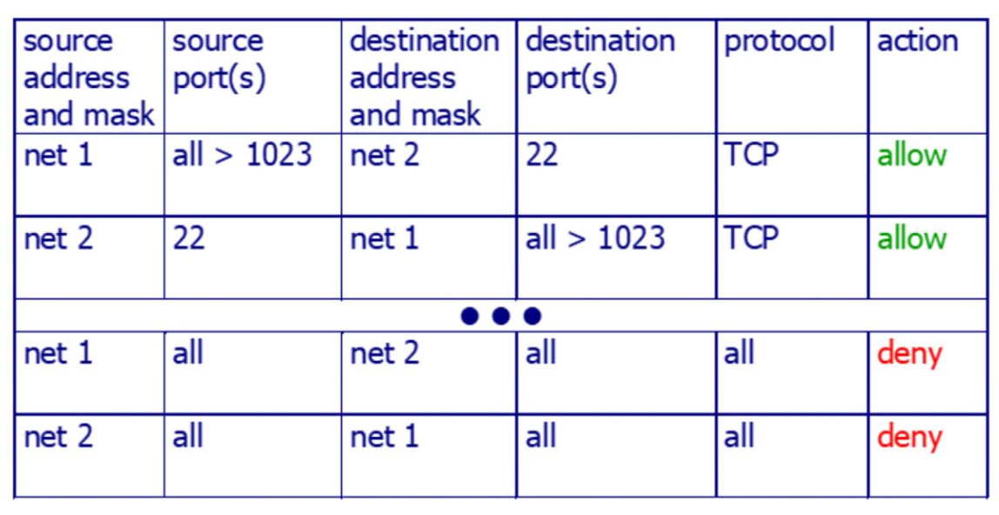
Example for SSH Filter Rules (Evaluating ACK-Flag)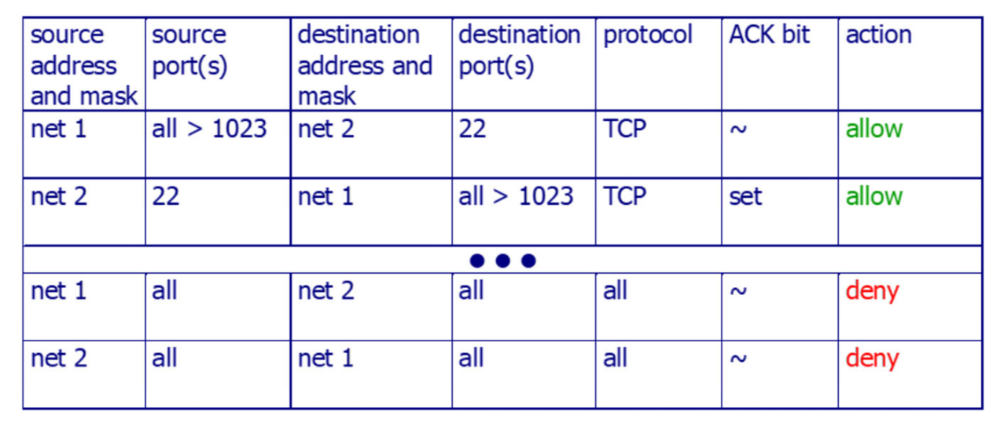
Stateful Packet Filter
- checking packets using predefined filter rules
- recording state information of connections and modify filter rules dynamically to accept expected answer packets
- more efficient than application layer firewalls
- every connection requires a buffer place, inactive connections are released accidentally disconnected connections can be prevented with “keep alive” packets (e.g. configure keep alive packets in Putty)
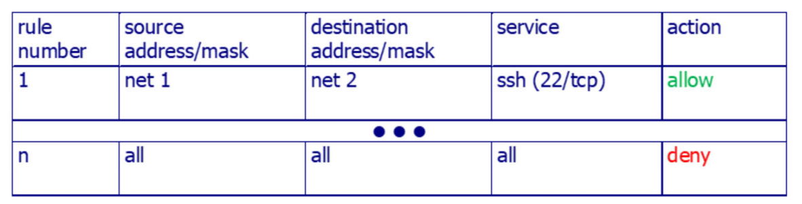
Example of a State Table
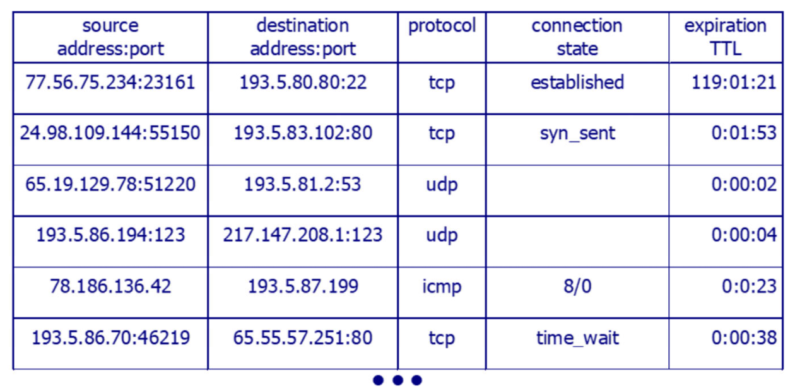
Stateful Inspection Firewall / Stateful Firewall
- enhancement of stateful packet filters
- do stateful packet inspection (SPI) by analyzing and modifying the application layer content (content filtering, deep inspection)
- Deep inspection: examining not just the metadata of packets (as in traditional stateful inspection) but also their contents (protocol specific understanding, detection of advanced threats like worm, trojans, …)
- can be done on unencrypted connections or encrypted connections terminating on the firewall
- Advantages:
- No more problem with certain types of attacks like TCP ACK packet without previous SYN
- No problem with protocols with dynamic port numbers (VoIP, Skype)
- No problem with ICMP
Next Generation Firewalls
Definition in 2003 from Gartner
- can apply configuration modifications without interruptions
- has an integrated intrusion preventions system (IPS)
- provide application intelligence: applications and protocols can be securely identified in addition to port based only rules
- can consider external sources in rules: user information out of directory services or allow-/block-lists of IP addresses
- provide all features of traditional firewalls: packet filter, NAT, stateful inspection, VPN, …
- evolve into Unified Threat Management (UTM) firewalls
Unified Threat Management UTM
Can perform multiple security functions within one single appliance:
- network firewall
- network intrusion prevention
- gateway antivirus (AV)
- gateway anti-spam
- VPN
- content filtering
- load balancing
- data leak prevention
- on-appliance reporting
Threat Protection Firewalls
- enhancement of next generation firewalls
- can detect malicious content/code by
- extracting and executing the content/code in a sandbox environment
- analyze the behavior and the outcomes
- are relatively new, not much experience
- means of protection against Advanced Persistent Threats (APT: continuous computer hacking process, usually targets organizations or nations for business or political motives), malware and trojans
Application Layer Firewalls
- unpack and analyze the content of the application layer protocol
- act as a relay station or proxy between sender and recipient
- allow an authentication and authorization of the communication on user level
- are often referred to as:
- application layer/level gateway (ALG)
- proxy server
- application firewall: additionally take the header information from layer 2 up to layer 7 into account (something both terms above don’t do)
ALG/ Proxy Server Types
- Dedicated proxy servers: specialized in dedicated application protocols (e.g. http, dns), can detect the abuse for tunneling other protocols (e.g. IP over DNS, P2P over HTTP), are complex
- Generic proxy servers: used as a replacement of currently non-existing dedicated proxy servers, forwards the complete content without analyzing
- Non-Transparent proxy servers: sender must send the packets directly to the proxy server, configuration inside the application/host system
- Transparent proxy servers: transparent for client, no configuration needed
Advantages: good logging capabilities
Disadvantages: different specialized proxy servers, new protocols are not implemented directly, proxy server cannot fix security problems of protocols, break secured connects (man in the middle)
Web Application Firewall (WAF)
- special case of an application layer firewall
- protect web applications against attacks over HTTP/S:
- Injection attacks: SQL, LDAP, script, cross-site scripting (XSS), …
- hidden field tampering
- parameter tampering
- cookie poisoning
- buffer overflow attacks
- forceful browsing
- unauthorized access to web servers
- known vulnerabilities of web applications (e.g. Log4J)
DNS Firewalls
- also called Response Policy Zones (RPZ) firewalls
- able to allow, block or redirect connections based on DNS requests
- prevent clients from accessing malicious sites clients must use them as resolvers!
- cannot prevent connections if the client uses DoT (DNS over TLS) or DoH (DNS over HTTPS) on foreign DNS servers
- use blocklists from subscription services (free or paid)
Hybrid Firewalls
- combine features of network layer firewalls and application layer firewalls
- “all in one” firewall design with multi device firewall architecture
- state of the art firewalls
Design of a Firewall Environment
- only use devices which are intended to be used
- create defense-in-depth: create multiple layers of security. If one layer becomes compromised, another layer is there to prevent the attack (e.g. use multiple firewalls, include products such as antimalware and intrusion detection software)
- pay attention to internal threats
- document the firewall’s capabilities
Components
Screened Host
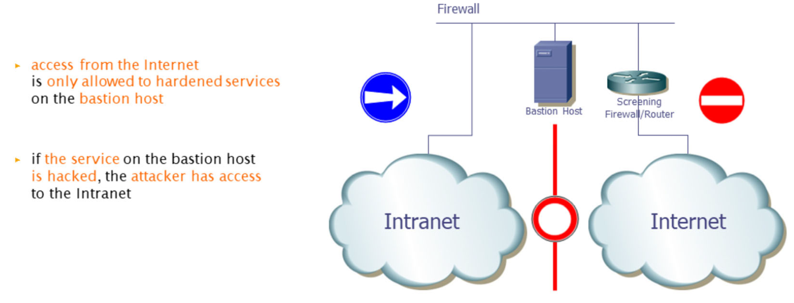
Screened Subnet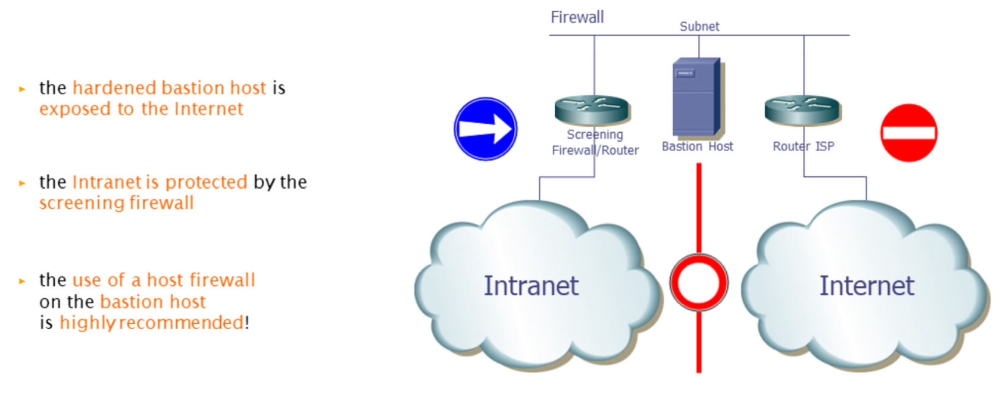
Dual Homed Host
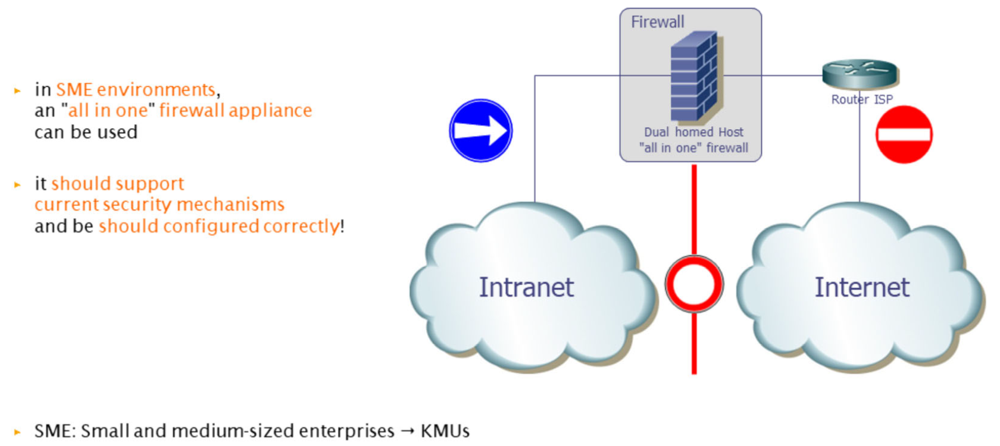
Tri- & Multi Homed Host
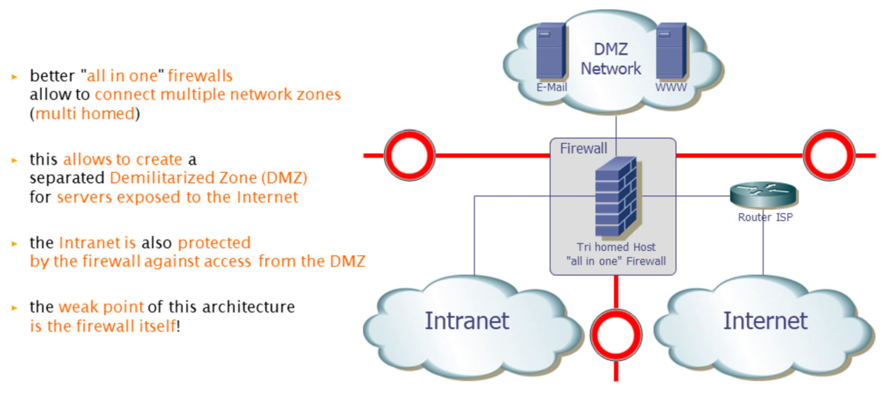
Security-Zones with Multi Homed Firewall
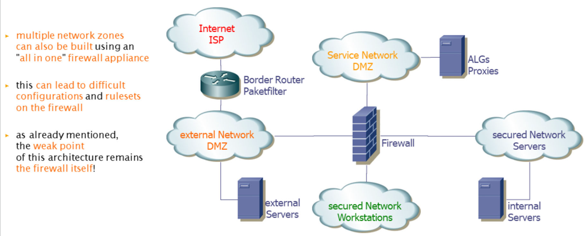
Security-Zones with multiple Firewalls
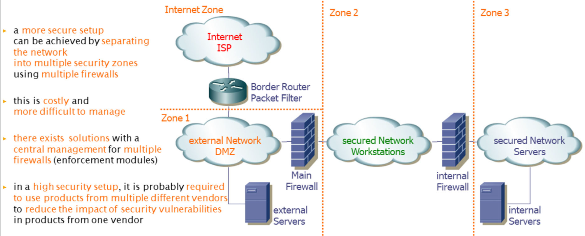
Security-Zones with Firewalls and IDS/IPS
See IDS & IPS
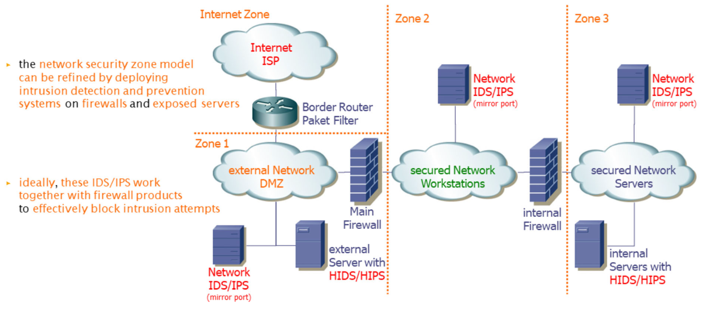
Security-Zones with Firewalls, IDS/IPS and SIEM
See SIEM
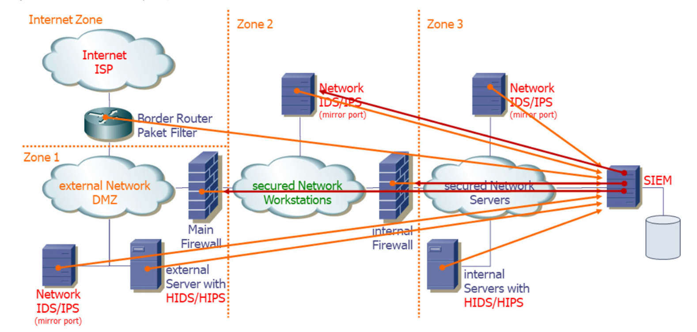
Firewalls for Virtual Infrastructure
- a physical firewall is not able to control traffic between virtual hosts (not leaving the Hypervisor)
- some virtualization systems offer built-in firewalls or allow third-party software firewalls
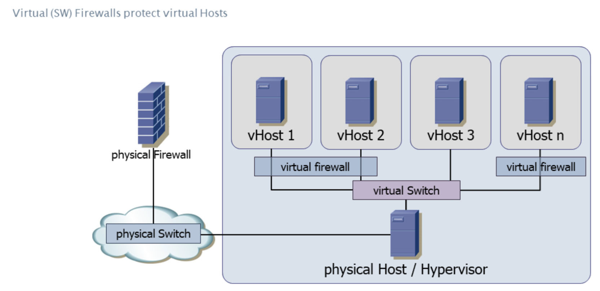
links: SPA TOC - Host & Network Security - Index